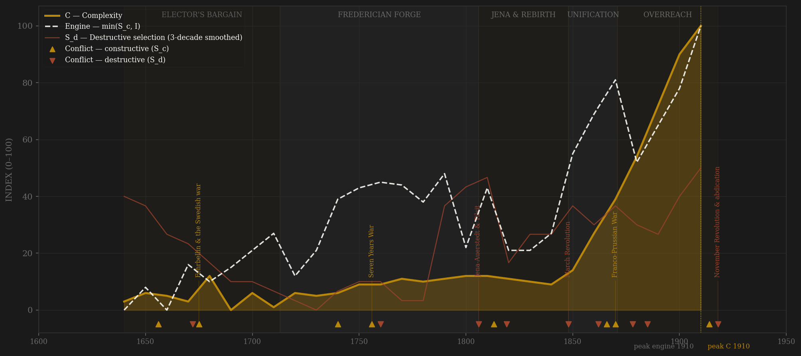
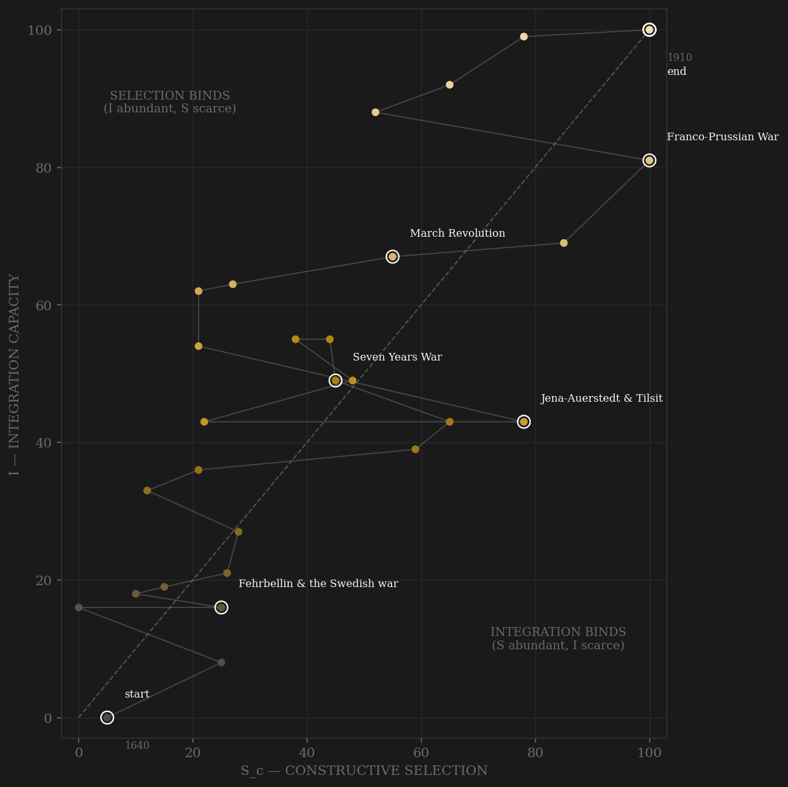

Prussia is the service-state showcase — the one polity in the sample deliberately constructed as a selection machine. The Great Elector's bargain of 1653 opens the arc: Junker privilege exchanged for Junker service, the nobility conscripted into an officer-and-official ladder while the peasantry paid for it. Each generation adds a rung — the Huguenot import of 1685, the Kantonsystem of 1733, Cocceji's judicial examinations, and in 1770 the examination edict that made entry to the higher bureaucracy a matter of statute rather than favour. The engine's first plateau is Frederician: the Silesian gamble and the Seven Years War, a three-front peer contest survived on interior lines — channel B's apex — while the late Frederick quietly re-nobilized his officer corps, the first decay. Then the hinge of the whole series: Jena. In 1806 the ossified machine collapsed in six weeks, Berlin was occupied, and the state was halved at Tilsit — the destructive maximum — and out of the catastrophe came the great reopening: Stein and Hardenberg abolished serfdom, opened careers to talent, gave cities their government, emancipated the Jews on paper, examined the officers, and founded Berlin University, all inside a decade. Reform under pressure, measured and dated. From there the exam state and the Zollverein compound together — first mass-literacy polity in Europe, customs union before political union — through the rigged-rules constitutionalism of the three-class franchise, Bismarck's short wars, and unification, which is an integration event wearing a military uniform. The late decades decay exactly where Rosenberg said they would: Puttkamer purges the liberals from the machinery, the Guards close to commoners, the reserve-officer patent grows a confessional bar — while complexity keeps compounding on rail, steel, and schools. Engine and C are both still rising when the series hits 1914; the lag reads +0 only because the war truncates both peaks. The 1918 revolution is not right-censoring — it is the terminal S_d, the machinery dissolved from within after the blockade and the two-front war broke it.

The trajectory enters at the floor — integration literally zero on the measured series in the devastated 1640s Mark — and climbs the selection axis first: the bargain, the barracks, the exams all predate the economy that would justify them. It crosses the diagonal early and repeatedly: Prussia is the sample's clearest case of a state whose selection machinery ran AHEAD of its integration for a century (the inverse of Song). Jena knocks the path violently left — selection collapses with the old army — and the Stein-Hardenberg decade snaps it back in the sharpest single-decade selection recovery in the sample. From the Zollverein on, the path climbs both axes in step like Britain's, but with a visible sawtooth: every reform wave (1807-19, 1848-49, 1867-71) pushes selection up, every reaction (Carlsbad, the reaction of the 1850s, Puttkamer) drags it back while integration never stops rising. The series dies in the top-right corner at 100/100 — a trajectory cut off mid-flight by a war it chose, which is what Wilhelmine overreach looks like in phase space.
Coded by locus and target, never by outcome. Prussia supplies two locus rules at full clarity. First, the Deluge rule at maximum amplitude: Jena-Auerstedt 1806 was an external war, but the core was overrun in six weeks, Berlin occupied, the court driven to Memel, and the state halved at Tilsit — S_d by locus, like Jingkang, whatever the origin of the armies. Against it, the Seven Years War — raids on Berlin included — stays in channel B: the capital was twice touched (1757, 1760) but the levy-and-tax machinery never broke, so the war disciplined the state rather than dismantling it (the raids score small S_d spikes; the war scores B — the Hannibal rule applied at Kunersdorf's edge). Second, the bloodless-override rule: the constitutional crisis of 1862-66, in which Bismarck governed for four years without a legal budget, sheds no blood and destroys no buildings, but is S_d by target — the executive overriding the polity's own budget machinery — exactly as the Anti-Socialist Law of 1878-90 and the Puttkamer purges are S_d aimed at subjects' and officials' capacity to organize. The 1848 revolution and the 1918 revolution bracket the constitutional era with internal-locus violence, the second terminal: the November revolution dissolved the monarchy that the March barricades had merely bent.
| YEAR | CONFLICT | CODE | CODING RATIONALE |
|---|---|---|---|
| 1656 | First Northern War (Warsaw, Oliva) | Sc | Peer contest vs Sweden/Poland; sovereignty over Ducal Prussia won at Wehlau/Oliva 1660 — external locus throughout |
| 1672 | Kalckstein abduction & execution | Sd | An estates oppositionist kidnapped from Warsaw and executed — the crown destroying constitutional opposition (bloodless-era Yue Fei analogue) |
| 1675 | Fehrbellin & the Swedish war | Sc | The reputation-making peer victory; winter campaign 1678-79 — external rivalry disciplining the young army-state |
| 1740 | Silesian Wars | Sc | Mollwitz to Hohenfriedberg: the seizure of Silesia makes Prussia Austria's peer — pure channel B predation-contest |
| 1756 | Seven Years War | Sc | Three-front peer war vs Austria, Russia, France survived on interior lines — the channel-B apex (Rossbach, Leuthen, Kunersdorf) |
| 1760 | Berlin raids (1757 Hadik, 1760 occupation) | Sd | The capital ransomed then occupied three days — core touched, machinery held: small S_d spikes inside a B war (Hannibal rule keeps the WAR in B) |
| 1806 | Jena-Auerstedt & Tilsit | Sd | Core overrun in six weeks, Berlin occupied, state halved — S_d by the Deluge/Jingkang locus rule despite external origin; the series maximum |
| 1813 | Wars of Liberation | Sc | Leipzig to Waterloo: allied field campaigns, the core liberated within months of Tauroggen — back in channel B (separate ledger row from Jena; one arc annotation) |
| 1819 | Carlsbad Decrees / Demagogenverfolgung | Sd | University surveillance, careers destroyed by edict — bloodless state action against subjects' coordination (Song blacklist precedent) |
| 1848 | March Revolution | Sd | ~300 dead at the Berlin barricades, army counter-revolution in November — internal locus; yet it produces the 1849 constitution |
| 1862 | Verfassungskonflikt (budgetless rule) | Sd | Bismarck governs four years without a legal budget — zero blood, machinery override by target: the bloodless S_d type-case alongside Peterloo |
| 1866 | Königgrätz (with Denmark 1864) | Sc | Seven weeks vs the Austrian peer settles the German question by external contest; 1864 Düppel the rehearsal |
| 1870 | Franco-Prussian War | Sc | Sedan and the 5bn-franc indemnity — the last and largest of the unification peer wars; integration event wearing a uniform |
| 1878 | Anti-Socialist Law (with Kulturkampf 1871-78) | Sd | Party organization, press and assembly banned; May Laws jailed priests — state coercion of subjects' organizational machinery, largely bloodless |
| 1885 | Puttkamer purges | Sd | Liberal bureaucrats weeded, 'politische Beamte' doctrine — the examined machinery itself politicized (Rosenberg's aristocratic counter-offensive) |
| 1914 | First World War | Sc | The two-front peer war stays channel B until the collapse: the core is never penetrated — the blockade and exhaustion do the work |
| 1918 | November Revolution & abdication | Sd | Kiel mutiny, workers' councils, abdication — terminal internal-locus dissolution of the 278-year-old machinery |
| COMPONENT | GRADE | BASIS |
|---|---|---|
| S_c A — Elite-entry (0.40) | ○ scholar-coded, calibration-anchored | The service-state arc coded 0-10 per decade from Clark, Iron Kingdom (2006) ch.2-10 and Rosenberg, Bureaucracy, Aristocracy and Autocracy (1958) ch.2-8: Recess 1653, Edict of Potsdam 1685, Kantonsystem 1733, Cocceji exams, EXAMINATION EDICT 1770 (Rosenberg pp.175ff), Abitur 1788, Stein-Hardenberg 1807-19, Berlin University 1810; decay: Frederician re-nobilization 1763+, Carlsbad 1819, Junker closure of Guards/cavalry, Puttkamer purges 1880s, reserve-officer bars. Calibrated vs Clio Germany numeracy (1620=78 → 1830s≈99: first mass-literacy state) and Schwinges enrollment (components_audit.csv) |
| S_c B — External rivalry (0.30 cap) | ◐ war-years chronology | War-years/decade + race ordinal: Swedish/Polish wars, Silesian wars, Seven Years War (the B apex), coalition wars, 1813-15, 1864/66/70, naval race 1898+, 1914-18. LOCUS-CLEANED: Jena-Auerstedt 1806-07 = S_d (core overrun — Deluge rule); 1848 internal; Berlin raids 1757/1760 = S_d spikes inside a B war. This channel alone = the frozen Sc_v1_combat column |
| S_c C — Within-rules politics (0.30) | ● measured 1789+ · ○ coded before | OWID/V-Dem electoral democracy decade means ×10 from 1790 (0.26 absolutist floor → 0.57 United Diet 1847 → 1.57 three-class Landtag 1850s → 2.3-2.5 imperial plateau — the rigged-rules ceiling coded honestly: universal-suffrage Reichstag inside a three-class-franchise executive cage; SPD's within-rules rise half-absorbed). Pre-1790 coded on the spliced scale (estates politics 1640s-60s; absolutist near-zero 1680s-1780s) |
| S_d — Destructive | ○ scholar-coded | Locus-and-target ordinal: 1640s Mark devastation, Kalckstein 1672, Berlin raids 1757/60, JENA-TILSIT 1806-07 (max), Demagogenverfolgung 1819, 1848, Verfassungskonflikt 1862-66 (bloodless machinery override), Kulturkampf, Anti-Socialist Law 1878-90, Puttkamer, 1918 revolution (terminal) |
| I — Integration | ◐ measured tax + rail · ○ coded institutions | 0.25 Karaman-Pamuk-Dincecco Prussia tax revenue/GDP (1680-1910, Prussia-specific) + 0.25 Mitchell German rail mileage (1835+; pre-rail true zero) + 0.50 coded ordinal (excise state, Oder-Spree canal 1668, General Directory 1723, ALR 1794, MAASSEN TARIFF 1818, ZOLLVEREIN 1834 — customs union before political union, THE integration technology — 1866-71 unification, Reichsbank 1876, state railways) |
| C — Complexity | ◐ proxy-measured | ≥2-component mean of Maddison DEU GDPpc (annual 1500-1913; German-lands aggregate as Prussia proxy — level biased, shape defensible), Clio Germany urbanization anchors, Schwinges university enrollment per million (1680-1900). All German-lands series flagged ◐, never silently equated with Prussia |
| E — Entropy | ○ coded + ◐ measured banking crises | 0.70 coded crisis ordinal (30YW aftermath, East Prussian plague 1709-11 ≈1/3 of the province, Seven Years War devastation + Ephraimiten debasement, Tilsit indemnity, 1846-47 potato crisis, GRÜNDERKRACH 1873 + Long Depression, WWI blockade famine) + 0.30 Reinhart-Rogoff Germany banking-crisis share (1693+). The 1923 hyperinflation is post-series, EXCLUDED |
| R — Population | ○ coded anchors | Prussian state population, millions, raw (Clark appendix figures; Mitchell). Growth is substantially ANNEXATION: Silesia 1742, West Prussia 1772, partitions 1793/95, TILSIT HALVES THE STATE 1807, Vienna 1815, the 1866 annexations — every basis switch flagged in R_notes |
28 decade rows (1640-1910; the 1910 row runs to the November 1918 revolution), built STRAIGHT to S_c definition v2 (0.40 elite-entry / 0.30 external hard cap / 0.30 within-rules) by scripts/build_prussia_sicre.py, 2026-07-06; ledger data/raw/prussia/coding_ledger_v2.csv, audit components_audit.csv, provenance SOURCES.md; Sc_v1_combat = channel B alone per the straight-to-v2 convention. ONE POLITY THROUGHOUT: Prussia dissolves INTO Germany 1871 but the state persists to 1918 — the 1871 phase shift is flagged, not a polity break; 1918 is a genuine collapse (terminal S_d), not censoring of the polity — but the PEAKS are censored by the 1914 cliff. BOTH DEFINITIONS REPORTED: v2 engine 1910 → C 1910, lag ≥ +0 RIGHT-CENSORED (both smoothed series still rising at the series end; unsmoothed identical); v1 combat-only engine 1910 → C 1910, likewise ≥ +0 RIGHT-CENSORED. Interior-window check (drop the terminal row, Tokugawa precedent): v2 engine 1900 → C 1900, still SIMULTANEOUS; v1 engine 1860 (the unification wars) → C 1900 = +40 PASS — the one non-censored reading, shown not hidden. WWI-sensitivity: recoding 1910 channel B to race-only leaves both verdicts unchanged. Frozen protocol throughout: 3-decade centered rolling mean, engine = min(Sc, I). THE PRUSSIA-AUSTRIA INTEGRATION CONTRAST (the pair's comparative point): Prussia abolished its internal customs in 1818 and built the Zollverein by 1834 — market unification a generation BEFORE political unification; Habsburg Austria kept internal customs lines until 1775/1851, never joined the Zollverein it tried to break, and after 1867 CAPPED its own integration by statute in a dual-monarchy compromise renegotiated every ten years. Same decades, opposite integration technologies — and the C trajectories diverge accordingly. German-lands proxy caveat: Maddison DEU GDPpc, Clio urbanization, Schwinges enrollment are Germany-wide series standing in for Prussia (~60% of imperial population post-1871); levels biased, min-max shapes defensible; graded ◐. Rebuild: build_prussia_sicre.py, then polity_report.py --slug prussia.